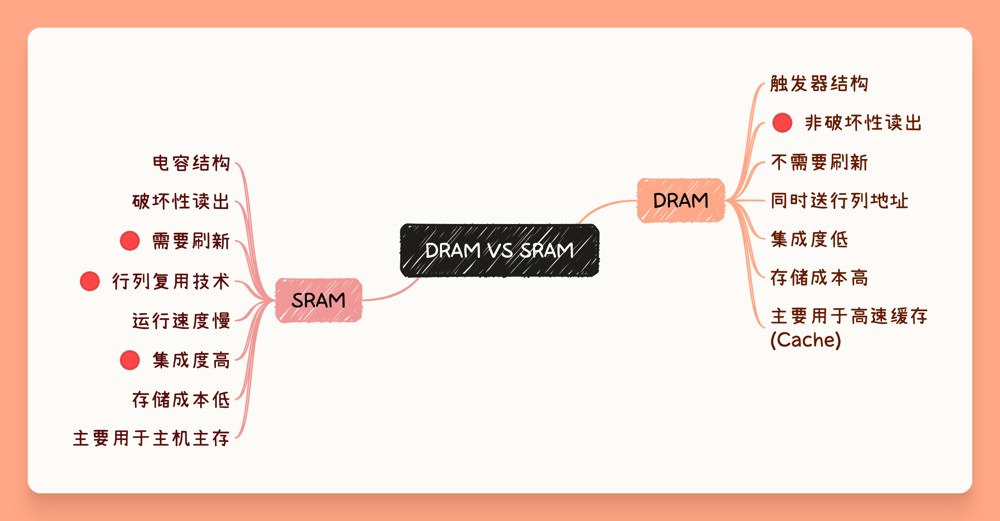
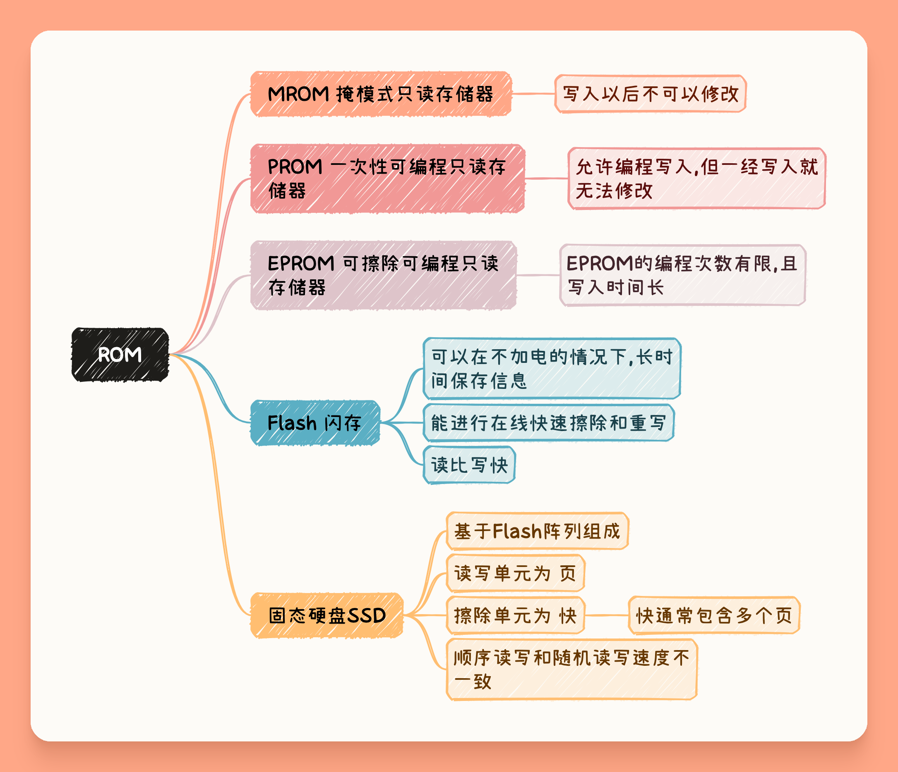
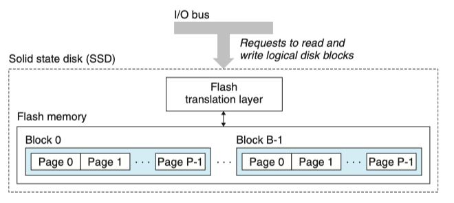

存储系统¶

存储器的分类

存储器的技术指标
存储容量 存储器可以存储的二进制信息总量
- 位表示法 存储器中的存储单元的总数和存储字长的乘积表示 如 \(1K\times 4\) 表示该芯片有 1K个单元,每个单元的长度为4bit
- 字节表示法 默认一个存储单元内有8bit的表示法,如128B
存取时间 存储器访问时间,是指启动一次存储器操作(读\写)到该操作完成所需要经历的时间
存取周期 连续启动两次存储器操作,所需要的最短时间间隔. 存储周期通常略大于存取时间,这是由于两次操作直接通常存储器需要有一个短暂的恢复时间.

存取带宽 单位时间内存储器能传输的信息量,带宽是衡量数据传输速率的重要指标.一般而言,存取时间越短,数据位宽越大,存储带宽越高.
存储器的分层结构 由上置下,容量逐渐扩大,速度逐渐变慢. 上层存储的是下层的某些数据的副本

半导体随机存取存储器¶
DRAM 与 SRAM¶

DRAM的刷新机制 由于DRAM的存储单元仅仅有MOS管和一个电容. 电容C上的电荷会逐渐泄露,数据只能保存较短的时间, 为了防止数据丢失,必须定时采取类似于读操作的方式对存储单元补充电荷.

- DRAM的刷新按照行进行
- 刷新地址有刷新地址计数器给出, 不由
CPU发出.
- 刷新地址有刷新地址计数器给出, 不由
- 最大刷新周期 信息存储到数据丢失之间的这段时间
- 刷新周期 实际上DRAM连续两次刷新的时间间隔
- 刷新操作并不完全等同于读操作
- 刷新操作不需要给出列地址

- 刷新时候, DRAM
不能响应CPU的访问- 集中刷新 一次性刷新全部的内容
- 会导致较长的一段时间内CPU均无法访问,称为死区时间
- 分散刷新 把存储周期分为两部分,一部分用于读写操作,一部分用于刷新操作
- 不存在死区时间,但性能较低
- 异步刷新 将刷新的总时间平均分配到一段时间内,集中刷新和分散刷新的结合
- 集中刷新 一次性刷新全部的内容
DRAM的行列复用技术

- DRAM只有一条地址线,CPU分时传送行\列地址
- 不设置片选信号,通常有RAS和CAS选通信号代替
- 存储单元有行列地址译码选中
- 行列地址按照 极可能接近,且行地址要小于列地址
DRAM行列地址复用技术
假定DRAM芯片中存储阵列的行数为r,列数为c,对于一个 \(2K\times 1\) 位的DRAM芯片,位保证其地址引脚数最少,并尽可能减少刷新开销,则r,c的取值分别为______?
解: \(2K = 2^11 = 2^ 5 \times 2^ 6\) 故r=32,c=64
SDRAM 同步DRAM
ROM¶

主存的结构,主存与CPU的连接¶

- CPU给出读\写控制信号
- 如果是读操作,CPU还需要给出其MAR中的内容,并经过地址译码选中DRAM中的单元并写入CPU的MDR中
- 如果是写操作,CPU除了给出MAR中的地址,还需要给出MDR中的数据,并把其中的内容写入DRAM

读内存操作示意图

存储器的拓展 (字\位拓展)¶
位拓展又称字长拓展或数据总线拓展. 简单来说就是多个存储芯片并发工作.

- 假设有 \(2M\times 1\) 的DRAM芯片,用4片DRAM按位拓展组成, \(2M\times 4\)
字拓展容量拓展或者地址总线拓展

- 假设有 \(2M\times 1\) 的DRAM芯片,用4片DRAM按字拓展组成, \(8M\times 1\)

- 假设要利用 \(256K\times 8\) 的SRAM存储芯片要组成 \(2M\times 32\) 的存储系统,则需要进行 \(32 / 8 = 4\) 需要四片SRAM组成一个整体(做字拓展), 再 \(2M/256K=8\) 需要8组这样做过位拓展的整体,即字拓展. 故总需要32个SRAM芯片.
多模块存储器¶
多体交叉存储器 空间并行技术,利用多个结构完全相同的存储模块并行工作来提高存储其的吞吐率.
主要有两种 高位交叉(顺序编址)方式 和 地位交叉方式

低位交叉编址具有如下特点
- 相邻元素位于不同存储体中
- 同一存储体的元素不相邻

此时存储体与模块号的关系,如下所示

此时对连续地址的访问,本质是一种流水线方式. 连续读取n个连续字所需要的时间为 \(T+(n-1)t\)

高速存储器(cache)¶
Cache的基本原理 通过在CPU和内存中增加一个(几个)由SRAM组成的Cache,存储经常被访问或者即将被访问的数据副本, 基本思想是 程序的局部性原理.
相联寄存器(CAM) 一种可以按内容寻值的寄存器.

程序的局部性原理¶
时间局部性 程序访问过的存储位置,很可能在未来会被多次访问
空间局部性 程序访问过的存储位置,在未来很可能访问其周围的存储单元
| C++ | |
|---|---|
这个程序体现局部性原理的地方
- 时间局部性 在for循环内, 变量
i,sum会被多次访问 - 空间局部性 在for循环内, 数组
V[i]的内容被顺序访问
与Cache相关性能指标¶
CPU访问主存前会先查询Cache,若查询成功,则称本次命中;若未在Cache中找到,则未命中.
命中率 设 \(N_c\) 为某程序运行期间命中cache的次数, \(N_m\) 为从主存中访问信息的次数,则命中率可以定义为
Warning
这里默认采用的是主存和Cache同时访问的情况
Cache/主存系统的平均访问时间 假设 \(t_c\) 为访问Cache的时间; \(t_m\) 为缺失访问主存的时间.
Cache的地址映射¶

- \(S=2^s\) 组数 表明Cache多少个组
- \(E\) 每个组含有多少个Cache行
- \(B=2^b\) 每块块的大小,按字节编址的话,每个Cache行的数据块大小为 \(2^b B\)
- \(m=\log_2(M)\) 物理地址位数
- \(m=t+s+b\)
- 使用中间位作为索引的原因 相邻的块总是被映射到不同的cache行.
简单来说无论是那种地址映射,都可以采用三步走的策略确定映射关系 组选择-行匹配-字抽取
直接映射 每个组只有一行(E=1)

- 组选择操作 由于直接映射每一组只有一行,可以直接读主存地址的组号

- 行匹配 对比对应Cache行的Tag标签和主存地址的Tag标签是否一致
- 若是,则查看Cache行的有效位是否为1,若是则命中;否则未命中
- 否则未命中

- 字抽取 若命中则可以根据主存地址的块偏移确定要抽取数据的首字节位于Cache行的那一个位置


组相联映射 一个组内有多个Cache行, 以2路组相联举例.
- 组选择

- 行匹配和字抽取


- 需要E个比较器
全相联映射 整个Cache都是一个组,任何一个主存块可以映射到任意一个Cache行中.

- TLB中使用是全相联映射
- 全相联的造价比较高


- 需要n个比较器
Cache的读写操作¶
读操作 Cache的读操作比较简单,只需要注意未命中的时候需要将该住存块加入地址(写操作).

写操作 根据不同情况有四种策略
- 写命中
- 写回法 设置脏位,不立刻将数据写入主存;而是当这行Cache被换出的时候再将数据写回内存
- 通过设置脏位(1位)来解决数据不一致的问题
- 可能导致DMA获取的数据不是最新的数据
- 直写法(写穿法) 写Cache命中的时候同步将更改写入主存
- 写回法 设置脏位,不立刻将数据写入主存;而是当这行Cache被换出的时候再将数据写回内存
- 写缺失
- 写分配法 为该主存块先分配Cache行,在执行写操作
- 非写分配法 不为其分配Cache行,而是直接写入内存

替换算法¶

LRU和LFU的访问例子
假定某程序访问7块信息,Cache分为4行,采用全相联方式组织.程序访问块的地址依次为 1,2,3,2,1,3,1,4,4,5,6,7,5,6,7,5. 分析LRU和LFU算法的访问过程和命中率.

Cache的应用¶
指令Cache和数据Cache分离 分离后，指令和数据可以独立并行访问各自的Cache，显著减少访问延迟，提升吞吐量; 减少结构冒险的可能性.
分级Cache 平衡速度、容量和访问延迟;减少主存访问次数，提升整体性能;提高缓存空间利用率;支持多核共享与一致性管理;适应不同工作负载
外部存储器¶
磁盘¶
磁盘由盘片构成,每个盘片有两面(盘面), 表面覆盖着磁性材料. 每个表面由一圈一圈磁道(柱面)组成,每个磁道被划分为一组扇区. 扇区和扇区之间有一些无法访问的结构称为间隙.
- 间隙不保存数据,仅用于表示扇区的格式化位

磁盘容量的计算 一个磁盘能够记录的最大位数
- 记录密度 磁道上比特位的密度
- 磁道密度 盘面上磁道的密度
- 面密度 一个盘面上比特位的密度
- 即 记录密度 x 磁道密度
磁盘容量的计算
假设我们有一个磁盘,其有5个盘片,每个扇区有512字节,每个面有20 000条磁道,每条磁道大概有300个扇区,那么磁盘的容量为:
磁盘操作(读\写) 磁盘以扇区为大小进行读写操作

- 寻道(seek) 读\写头沿半径方向,寻找其想要读\写的磁道
- 通常采取平均寻道时间为标准
- 旋转时间 读\写都定位了磁道后,等待磁道旋转到其期待扇区的时间
- 通常采用平均旋转时间 \(T=1/RPM\frac{60s}{1min}\) 其中RPM为旋转速度
- 传送时间 读\写磁头读\写完该扇区所需要的时间
- \(T=1/RPM\times\frac{1}{(平均扇区数/磁道)}\times\frac{60s}{1min}\)
磁盘读写时间的计算
磁盘地址 磁盘地址一般按照 |柱面(磁道)号 | 盘面(磁头)号 | 扇区号 | 的方式与主机进行交流.
冗余磁盘阵列(RAID)
- 同时使用多个磁盘,提高了传输速率
- 在多个磁盘上并行存取提高了系统的吞吐率
- 通过镜像功能提高了安全可靠性
- 通过数据校验提供了容错能力

固态硬盘(SSD)¶

- 有闪存阵列组成
- 读比写快
- 以页(page)为读单位,以块为擦除单位
- 只有这页所属的块被擦除后,才能被写
- 优点: 速度快;噪声小;能耗低;安全性高
- 磨损均衡 由闪存翻译层进行磨损均匀操作
- 动态磨损均衡 写入数据的时候优先选择擦除次数少的闪存块
- 静态磨损均衡 SSD会监测并自动进行数据分配,让老的闪存快主要承担读操作而让新的闪存快承担写操作